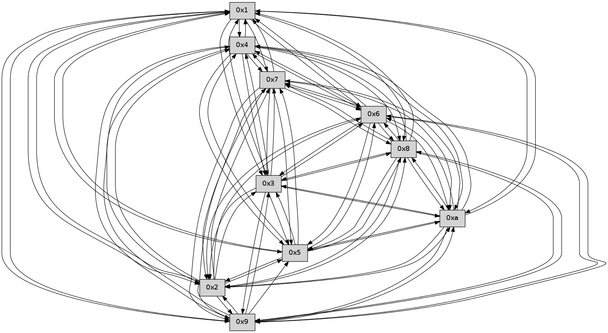

>> << IDX [start] -100 -25 -5 +0 +5 +25 +100 [425.23110795]
 Previous packets
----------------------------------------------------------------------
420.502318 beacon01(faad) #0 coord=01,02,03,04,05,06,07,0a,09,08 cycle=688.0ms assoc
-- color-indic=0 64 49 44
420.512300 beacon02(faad) #0 coord=01,02,03,04,05,06,07,0a,09,08 cycle=688.0ms assoc 64 da 75
420.522301 beacon03(faad) #0 coord=01,02,03,04,05,06,07,0a,09,08 cycle=688.0ms assoc 64 a0 38
420.532301 beacon04(faad) #0 coord=01,02,03,04,05,06,07,0a,09,08 cycle=688.0ms assoc 64 d7 d2
420.542300 beacon05(faad) #0 coord=01,02,03,04,05,06,07,0a,09,08 cycle=688.0ms assoc 64 ad 9f
420.552301 beacon06(faad) #0 coord=01,02,03,04,05,06,07,0a,09,08 cycle=688.0ms assoc 64 23 48
420.562302 beacon07(faad) #0 coord=01,02,03,04,05,06,07,0a,09,08 cycle=688.0ms assoc 64 59 05
420.572306 beacon0a(faad) #0 coord=01,02,03,04,05,06,07,0a,09,08 cycle=688.0ms assoc 64 28 0e
420.582306 beacon09(faad) #0 coord=01,02,03,04,05,06,07,0a,09,08 cycle=688.0ms assoc 64 a6 d9
420.592306 beacon08(faad) #0 coord=01,02,03,04,05,06,07,0a,09,08 cycle=688.0ms assoc 64 dc 94
420.603456 [Hello(10): seq=204 sym=6,3,2,5,9,8,7,4,1 sysInfo= stat=6:2,0,0,0/3:2,0,0,0/2:10,0,0,0/5:1,0,0,0/9:0,0,0,0/8:5,0,0,0/7:6,0,0,0/4:2,0,0,0/1:9,0,0,0]
420.605854 [Hello(9): seq=215 sym=5,2,3,4,7,6,8,10,1 sysInfo= stat=5:2,0,0,0/2:13,0,0,0/3:14,0,0,0/4:10,0,0,0/7:0,0,0,0/6:8,0,0,0/8:10,0,0,0/10:3,0,0,0/1:14,0,0,0]
420.608853 [Hello(4): seq=272 sym=5,7,6,2,3,9,8,10,1 sysInfo= stat=5:14,0,0,0/7:11,0,0,0/6:14,0,0,0/2:1,0,0,0/3:10,0,0,0/9:2,0,0,0/8:6,0,0,0/10:8,0,0,0/1:7,0,0,0]
420.613973 [Hello(5): seq=272 sym=7,6,4,3,1,9,8,10,2 sysInfo= stat=7:8,0,0,0/6:12,0,0,0/4:15,0,0,0/3:8,0,0,0/1:7,0,0,0/9:5,0,0,0/8:6,0,0,0/10:8,0,0,0/2:3,0,0,0]
420.616672 [Hello(2): seq=269 sym=4,5,7,6,3,9,8,10,1 sysInfo= stat=4:9,0,0,0/5:10,0,0,0/7:5,0,0,0/6:12,0,0,0/3:6,0,0,0/9:0,0,0,0/8:3,0,0,0/10:2,0,0,0/1:4,0,0,0]
420.624478 [Hello(3): seq=272 sym=1,7,6,2,4,8,9,10,5 sysInfo= stat=1:12,0,0,0/7:3,0,0,0/6:14,0,0,0/2:3,0,0,0/4:5,0,0,0/8:3,0,0,0/9:12,0,0,0/10:4,0,0,0/5:1,0,0,0]
420.627347 [Hello(8): seq=215 sym=5,2,3,4,7,6,9,10,1 sysInfo= stat=5:8,0,0,0/2:13,0,0,0/3:9,0,0,0/4:13,0,0,0/7:15,0,0,0/6:4,0,0,0/9:3,0,0,0/10:11,0,0,0/1:15,0,0,0]
----------------------------------------------------------------------
421.290450 beacon01(faad) #0 coord=01,02,03,04,05,06,07,0a,09,08 cycle=688.0ms assoc
-- color-indic=0 64 9d 71
421.300432 beacon02(faad) #0 coord=01,02,03,04,05,06,07,0a,09,08 cycle=688.0ms assoc 64 0e 40
421.310432 beacon03(faad) #0 coord=01,02,03,04,05,06,07,0a,09,08 cycle=688.0ms assoc 64 74 0d
421.320433 beacon04(faad) #0 coord=01,02,03,04,05,06,07,0a,09,08 cycle=688.0ms assoc 64 03 e7
421.330433 beacon05(faad) #0 coord=01,02,03,04,05,06,07,0a,09,08 cycle=688.0ms assoc 64 79 aa
421.340432 beacon06(faad) #0 coord=01,02,03,04,05,06,07,0a,09,08 cycle=688.0ms assoc 64 f7 7d
421.350434 beacon07(faad) #0 coord=01,02,03,04,05,06,07,0a,09,08 cycle=688.0ms assoc 64 8d 30
421.360438 beacon0a(faad) #0 coord=01,02,03,04,05,06,07,0a,09,08 cycle=688.0ms assoc 64 fc 3b
421.370438 beacon09(faad) #0 coord=01,02,03,04,05,06,07,0a,09,08 cycle=688.0ms assoc 64 72 ec
421.380438 beacon08(faad) #0 coord=01,02,03,04,05,06,07,0a,09,08 cycle=688.0ms assoc 64 08 a1
421.391594 [Hello(7): seq=272 sym=2,3,5,6,4,8,9,10,1 sysInfo= stat=2:11,0,0,0/3:8,0,0,0/5:14,0,0,0/6:1,0,0,0/4:7,0,0,0/8:0,0,0,0/9:2,0,0,0/10:5,0,0,0/1:4,0,0,0]
421.394904 [Hello(6): seq=272 sym=2,3,5,4,7,9,8,10 sysInfo= stat=2:11,0,0,0/3:13,0,0,0/5:8,0,0,0/4:15,0,0,0/7:7,0,0,0/9:6,0,0,0/8:10,0,0,0/10:5,0,0,0]
421.397529 [Hello(1): seq=181 sym=4,2,9,5,10,3,8,6,7 sysInfo= stat=4:14,0,0,0/2:3,0,0,0/9:7,0,0,0/5:2,0,0,0/10:0,0,0,0/3:6,0,0,0/8:4,0,0,0/6:3,0,0,0/7:6,0,0,0]
----------------------------------------------------------------------
422.078581 beacon01(faad) #0 coord=01,02,03,04,05,06,07,0a,09,08 cycle=688.0ms assoc
-- color-indic=0 64 21 74
422.088564 beacon02(faad) #0 coord=01,02,03,04,05,06,07,0a,09,08 cycle=688.0ms assoc 64 b2 45
422.098563 beacon03(faad) #0 coord=01,02,03,04,05,06,07,0a,09,08 cycle=688.0ms assoc 64 c8 08
422.108564 beacon04(faad) #0 coord=01,02,03,04,05,06,07,0a,09,08 cycle=688.0ms assoc 64 bf e2
422.118563 beacon05(faad) #0 coord=01,02,03,04,05,06,07,0a,09,08 cycle=688.0ms assoc 64 c5 af
422.128564 beacon06(faad) #0 coord=01,02,03,04,05,06,07,0a,09,08 cycle=688.0ms assoc 64 4b 78
422.138564 beacon07(faad) #0 coord=01,02,03,04,05,06,07,0a,09,08 cycle=688.0ms assoc 64 31 35
422.148570 beacon0a(faad) #0 coord=01,02,03,04,05,06,07,0a,09,08 cycle=688.0ms assoc 64 40 3e
422.158569 beacon09(faad) #0 coord=01,02,03,04,05,06,07,0a,09,08 cycle=688.0ms assoc 64 ce e9
422.168569 beacon08(faad) #0 coord=01,02,03,04,05,06,07,0a,09,08 cycle=688.0ms assoc 64 b4 a4
422.182425 [Hello(3): seq=273 sym=1,7,6,2,4,8,9,10,5 sysInfo= stat=1:13,0,0,0/7:4,0,0,0/6:15,0,0,0/2:3,0,0,0/4:5,0,0,0/8:4,0,0,0/9:12,0,0,0/10:4,0,0,0/5:1,0,0,0]
422.185289 [Hello(8): seq=216 sym=5,2,3,4,7,6,9,10,1 sysInfo= stat=5:8,0,0,0/2:13,0,0,0/3:9,0,0,0/4:13,0,0,0/7:0,0,0,0/6:5,0,0,0/9:3,0,0,0/10:11,0,0,0/1:0,0,0,0]
422.190567 [Hello(4): seq=273 sym=5,7,6,2,3,9,8,10,1 sysInfo= stat=5:15,0,0,0/7:12,0,0,0/6:15,0,0,0/2:2,0,0,0/3:11,0,0,0/9:2,0,0,0/8:7,0,0,0/10:8,0,0,0/1:8,0,0,0]
422.197062 [Hello(10): seq=205 sym=6,3,2,5,9,8,7,4,1 sysInfo= stat=6:3,0,0,0/3:3,0,0,0/2:11,0,0,0/5:2,0,0,0/9:1,0,0,0/8:6,0,0,0/7:7,0,0,0/4:3,0,0,0/1:10,0,0,0]
----------------------------------------------------------------------
422.866713 beacon01(faad) #0 coord=01,02,03,04,05,06,07,0a,09,08 cycle=688.0ms assoc
-- color-indic=0 64 e5 7a
422.876696 beacon02(faad) #0 coord=01,02,03,04,05,06,07,0a,09,08 cycle=688.0ms assoc 64 76 4b
422.886695 beacon03(faad) #0 coord=01,02,03,04,05,06,07,0a,09,08 cycle=688.0ms assoc 64 0c 06
422.896696 beacon04(faad) #0 coord=01,02,03,04,05,06,07,0a,09,08 cycle=688.0ms assoc 64 7b ec
422.906697 beacon05(faad) #0 coord=01,02,03,04,05,06,07,0a,09,08 cycle=688.0ms assoc 64 01 a1
422.916695 beacon06(faad) #0 coord=01,02,03,04,05,06,07,0a,09,08 cycle=688.0ms assoc 64 8f 76
422.926696 beacon07(faad) #0 coord=01,02,03,04,05,06,07,0a,09,08 cycle=688.0ms assoc 64 f5 3b
422.936700 beacon0a(faad) #0 coord=01,02,03,04,05,06,07,0a,09,08 cycle=688.0ms assoc 64 84 30
422.946700 beacon09(faad) #0 coord=01,02,03,04,05,06,07,0a,09,08 cycle=688.0ms assoc 64 0a e7
422.956702 beacon08(faad) #0 coord=01,02,03,04,05,06,07,0a,09,08 cycle=688.0ms assoc 64 70 aa
422.968818 [Hello(7): seq=273 sym=2,3,5,6,4,8,9,10,1 sysInfo= stat=2:12,0,0,0/3:9,0,0,0/5:14,0,0,0/6:2,0,0,0/4:8,0,0,0/8:1,0,0,0/9:2,0,0,0/10:6,0,0,0/1:5,0,0,0]
422.973751 [Hello(6): seq=273 sym=2,3,5,4,7,9,8,10,1 sysInfo= stat=2:12,0,0,0/3:14,0,0,0/5:8,0,0,0/4:0,0,0,0/7:7,0,0,0/9:6,0,0,0/8:11,0,0,0/10:6,0,0,0/1:0,0,0,0]
----------------------------------------------------------------------
423.654844 beacon01(faad) #0 coord=01,02,03,04,05,06,07,0a,09,08 cycle=688.0ms assoc
-- color-indic=0 64 59 7f
423.664827 beacon02(faad) #0 coord=01,02,03,04,05,06,07,0a,09,08 cycle=688.0ms assoc 64 ca 4e
423.674827 beacon03(faad) #0 coord=01,02,03,04,05,06,07,0a,09,08 cycle=688.0ms assoc 64 b0 03
423.684828 beacon04(faad) #0 coord=01,02,03,04,05,06,07,0a,09,08 cycle=688.0ms assoc 64 c7 e9
423.694828 beacon05(faad) #0 coord=01,02,03,04,05,06,07,0a,09,08 cycle=688.0ms assoc 64 bd a4
423.704826 beacon06(faad) #0 coord=01,02,03,04,05,06,07,0a,09,08 cycle=688.0ms assoc 64 33 73
423.714826 beacon07(faad) #0 coord=01,02,03,04,05,06,07,0a,09,08 cycle=688.0ms assoc 64 49 3e
423.724832 beacon0a(faad) #0 coord=01,02,03,04,05,06,07,0a,09,08 cycle=688.0ms assoc 64 38 35
423.734833 beacon09(faad) #0 coord=01,02,03,04,05,06,07,0a,09,08 cycle=688.0ms assoc 64 b6 e2
423.744832 beacon08(faad) #0 coord=01,02,03,04,05,06,07,0a,09,08 cycle=688.0ms assoc 64 cc af
423.756314 [Hello(8): seq=217 sym=5,2,3,4,7,6,9,10,1 sysInfo= stat=5:8,0,0,0/2:13,0,0,0/3:9,0,0,0/4:14,0,0,0/7:0,0,0,0/6:6,0,0,0/9:3,0,0,0/10:12,0,0,0/1:0,0,0,0]
423.759959 [Hello(10): seq=206 sym=6,3,2,5,9,8,7,4,1 sysInfo= stat=6:4,0,0,0/3:3,0,0,0/2:11,0,0,0/5:2,0,0,0/9:1,0,0,0/8:6,0,0,0/7:8,0,0,0/4:3,0,0,0/1:10,0,0,0]
423.763295 [Hello(2): seq=271 sym=4,5,7,6,3,9,8,10,1 sysInfo= stat=4:10,0,0,0/5:10,0,0,0/7:7,0,0,0/6:14,0,0,0/3:8,0,0,0/9:0,0,0,0/8:5,0,0,0/10:3,0,0,0/1:5,0,0,0]
423.768539 [Hello(3): seq=274 sym=1,7,6,2,4,8,9,10,5 sysInfo= stat=1:14,0,0,0/7:4,0,0,0/6:0,0,0,0/2:3,0,0,0/4:6,0,0,0/8:5,0,0,0/9:12,0,0,0/10:5,0,0,0/5:1,0,0,0]
423.770968 [Hello(4): seq=274 sym=5,7,6,2,3,9,8,10,1 mpr= sysInfo= stat=5:15,0,0,0/7:13,0,0,0/6:0,0,0,0/2:2,0,0,0/3:11,0,0,0/9:2,0,0,0/8:7,0,0,0/10:9,0,0,0/1:8,0,0,0]
423.775099 [Hello(5): seq=274 sym=7,6,4,3,1,8,10,2 sysInfo= stat=7:9,0,0,0/6:14,0,0,0/4:0,0,0,0/3:10,0,0,0/1:8,0,0,0/8:8,0,0,0/10:9,0,0,0/2:4,0,0,0]
423.778738 [Hello(9): seq=217 sym=5,2,3,4,7,6,8,10,1 sysInfo= stat=5:3,0,0,0/2:14,0,0,0/3:0,0,0,0/4:12,0,0,0/7:1,0,0,0/6:10,0,0,0/8:12,0,0,0/10:4,0,0,0/1:0,0,0,0]
----------------------------------------------------------------------
424.442977 beacon01(faad) #0 coord=01,02,03,04,05,06,07,0a,09,08 cycle=688.0ms assoc
-- color-indic=0 64 6d 67
424.452960 beacon02(faad) #0 coord=01,02,03,04,05,06,07,0a,09,08 cycle=688.0ms assoc 64 fe 56
424.462961 beacon03(faad) #0 coord=01,02,03,04,05,06,07,0a,09,08 cycle=688.0ms assoc 64 84 1b
424.472960 beacon04(faad) #0 coord=01,02,03,04,05,06,07,0a,09,08 cycle=688.0ms assoc 64 f3 f1
424.482959 beacon05(faad) #0 coord=01,02,03,04,05,06,07,0a,09,08 cycle=688.0ms assoc 64 89 bc
424.492959 beacon06(faad) #0 coord=01,02,03,04,05,06,07,0a,09,08 cycle=688.0ms assoc 64 07 6b
424.502960 beacon07(faad) #0 coord=01,02,03,04,05,06,07,0a,09,08 cycle=688.0ms assoc 64 7d 26
424.512965 beacon0a(faad) #0 coord=01,02,03,04,05,06,07,0a,09,08 cycle=688.0ms assoc 64 0c 2d
424.522966 beacon09(faad) #0 coord=01,02,03,04,05,06,07,0a,09,08 cycle=688.0ms assoc 64 82 fa
424.532967 beacon08(faad) #0 coord=01,02,03,04,05,06,07,0a,09,08 cycle=688.0ms assoc 64 f8 b7
424.544429 [Hello(6): seq=274 sym=2,3,5,4,7,9,8,10,1 sysInfo= stat=2:13,0,0,0/3:15,0,0,0/5:9,0,0,0/4:0,0,0,0/7:7,0,0,0/9:7,0,0,0/8:12,0,0,0/10:7,0,0,0/1:0,0,0,0]
424.549059 [Hello(7): seq=274 sym=2,3,5,6,4,8,9,10,1 sysInfo= stat=2:13,0,0,0/3:10,0,0,0/5:15,0,0,0/6:3,0,0,0/4:8,0,0,0/8:2,0,0,0/9:3,0,0,0/10:7,0,0,0/1:5,0,0,0]